Ako želite vidjeti samo dio:
1. vježba (FontoForge): Kreiranje vlastitog fonta
Zadatak je bio napraviti verzale i kurente slova svog imena i prezimena, kao i dijakritičkih znakova. Slika prikazuje stvoreni font te kako on funkcionira u različitim veličinama.
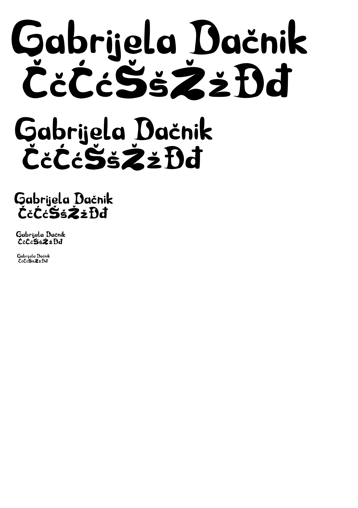2. vježba (Inkscape): Bézierova krivulja, precizno crtanje
Prvi dio zadatka odnosio se na praćenje uputa s videa, a drugi dio na izradu vlastitog dizajna pomoću Bézierovih krivulja. Prva slika prikazuje prvi dio zadatka u kojem sam precizno pomoću koordinatnog sustava nacrtala 2 krivulje, promijenila debljine i boje linija, napravila interpolaciju te izradila masku od teksta. Druga slika prikazuje moj dizajn koji sam napravila koristeći iste metode.
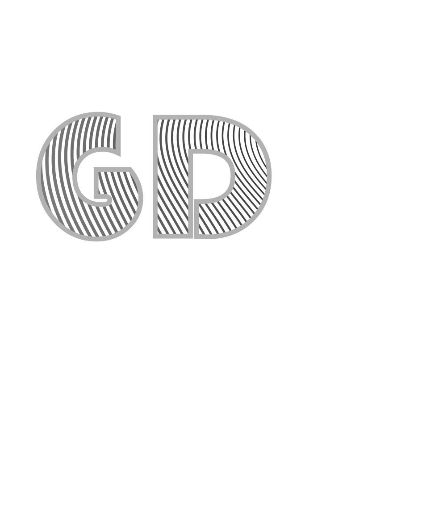 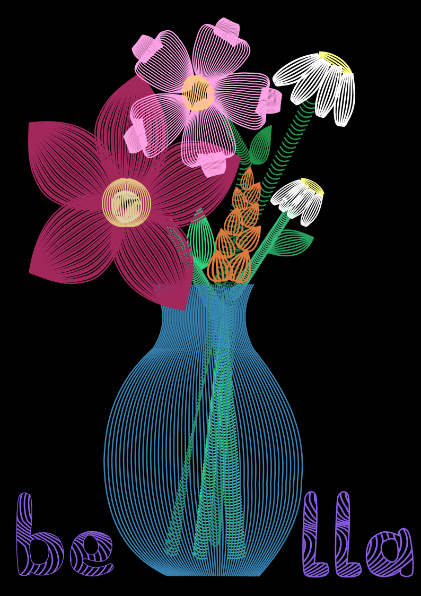3. vježba (Inkscape): Boja, transformacije i uzorci
U prvom dijelu zadatka prema predlošku sam pomoću Bézierovih krivulja nacrtala laticu cvijeta koju sam zatim duplicirala i rotirala kako bih oblikovala cvijet. Isto tako sam radila i za tučak i listove. Također sam definirala swatch boje. Na sličan način radila sam i drugi, samostalni dio zadatka: nacrtala sam jednu stranu leptira pomoću predloška, zatim sam je duplicirala i rotirala kako bih dobila 3 leptira. Za boje sam definirala swatch, a u pozadinu dodala uzorak.
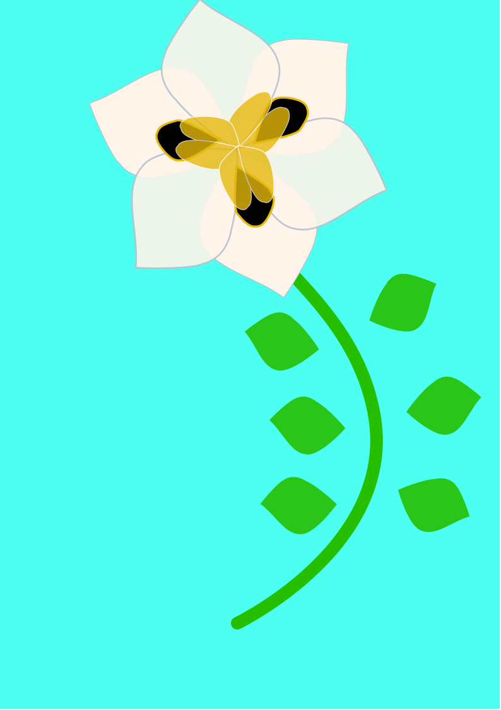 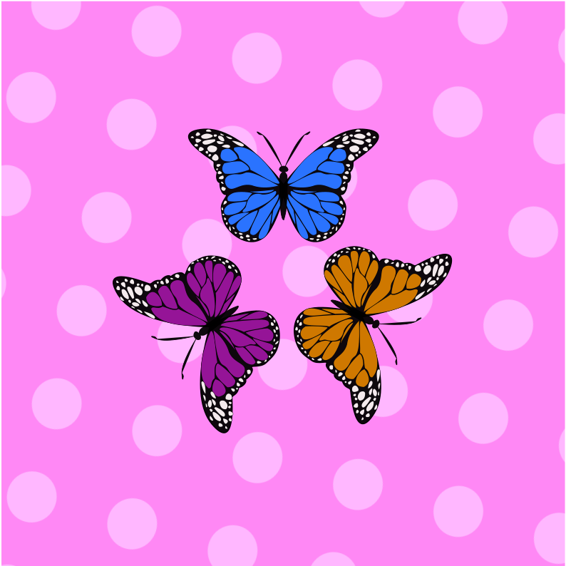4. vježba (Inkscape): Složeni objekti, gradijenti i transparencija
Na prvoj slici vide se slova koja su sastavljena od više staza metodama spajanja (Unite) ili oduzimanja oblika i čaša, oni predstavljaju složene oblike. U njihovim prikazima korišteni su različiti gradijenti i transparencija. Puno sam se više zabavila s drugim dijelom zadatka kad sam radila vlastiti primjer. Također sam koristila gradijente - linearni i radijalni te mesh i transparenciju.
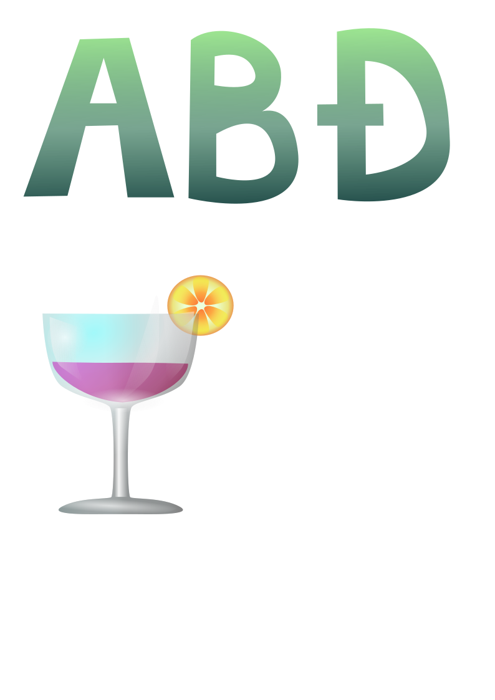 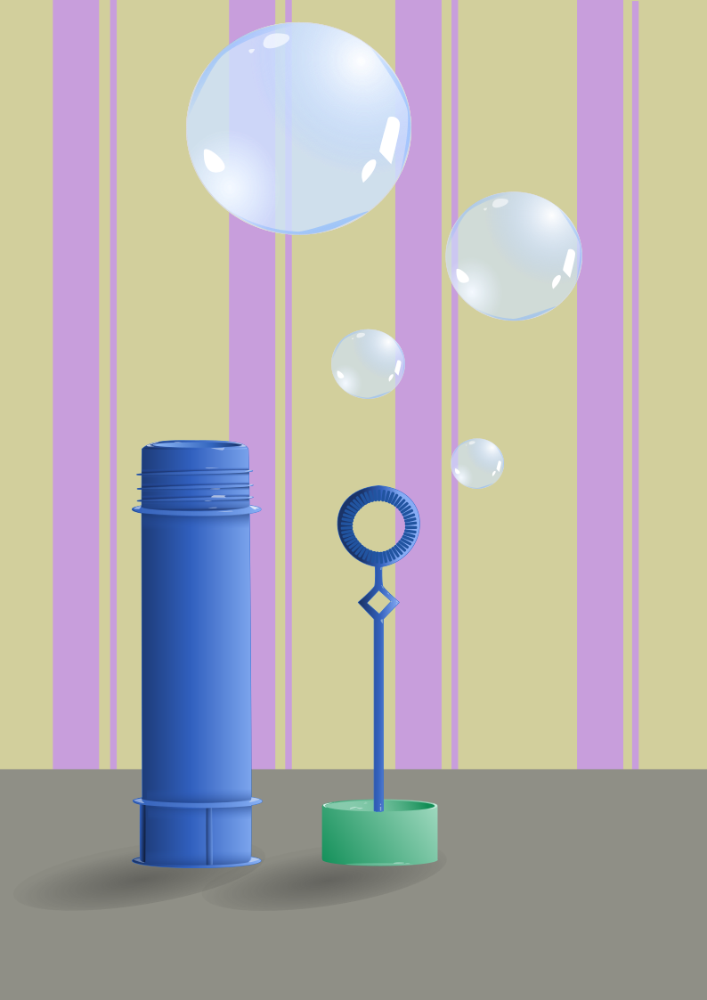1. projektni zadatak (Inkscape)
Prvi projektni zadatak sastojao se od dva dijela: prvo sam morala kreirati vlastiti font sa slovima koji tvore riječ "priroda", koju sam trebala staviti na sliku. Na slova sam primijenila interpolaciju i masku. Za drugi dio zadatka trebala sam, prema predlošku, nacrtati sliku pomoću Bézierovih krivulja. Nadalje, definirala sam swatch boje, na objektima sam koristila transformacije, multipliciranje (ribe, morska trava), smanjenje/povećanje (pruge na ribama), rotaciju (vlasulja), linearni i radijalni gradijent (ribe, vlasulja, morska trava, koralji, more), mesh (koralji), transparenciju te sam kreirala uzorak na koralju.
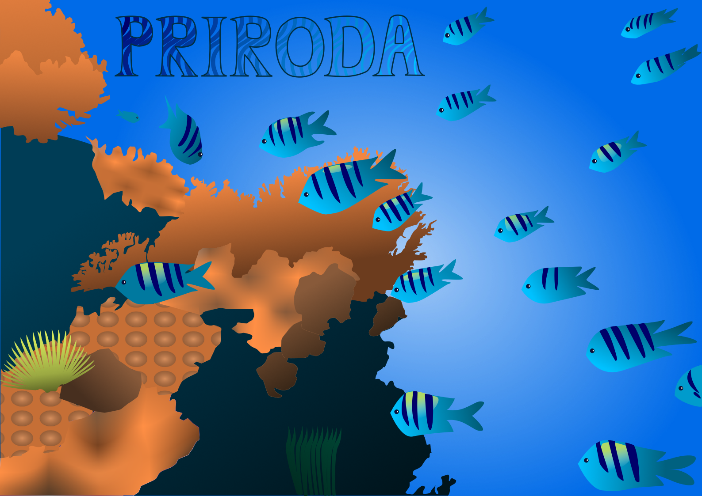5. vježba (GIMP): Retuširanje
Zadatak je bio retuširanje fotografije. Tehnike koje sam koristila za uklanjanje nedostataka su: zamućivanje (pomoću alata Despeckle, Median Blur), kloniranje (Clone i Healing alat) i kopiranje selekcije u slojeve. Nakon popravljanja oštećenja, neke dijelove sam posvjetlila i potamnila (Dodge/Burn alat) te ispravila boje na cijeloj fotografiji. Na drugoj sam fotografiji još i alatom Paintbrush malo pojačala šminku na očima.
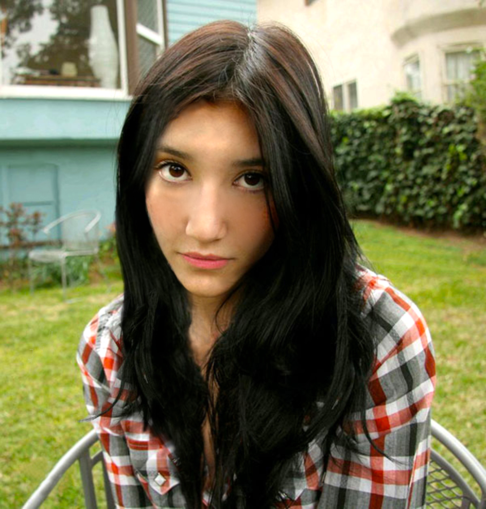 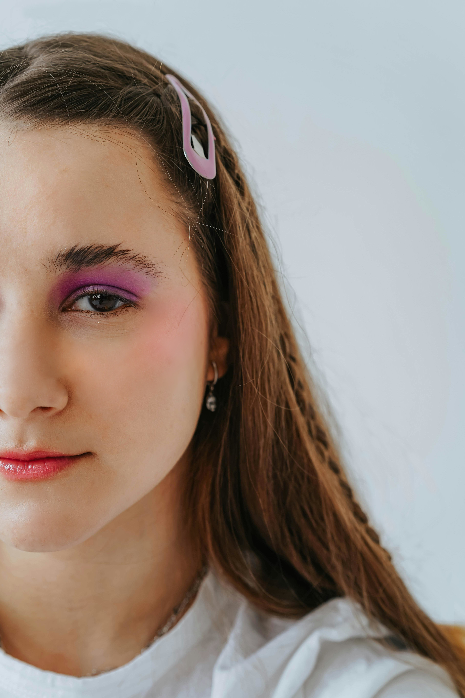6. vježba (GIMP): Koloriranje
Prvi i drugi primjer radila sam po istom principu: za svaku boju sam napravila posebnu selekciju pomoću Scissors Select Tool-a (staza se "lijepi" na oštre/kontrastne rubove) i Quick Mask Mode-a (pomoću Paintbrush i Eraser alata popravljala sam selekcije da budu što preciznije), zatim sam selekcije spremila kao posebne kanale za svaku boju te napravila masku za svaki kanal. Rezultat je bio da je samo neki dio fotografije bio obojen određenom bojom.
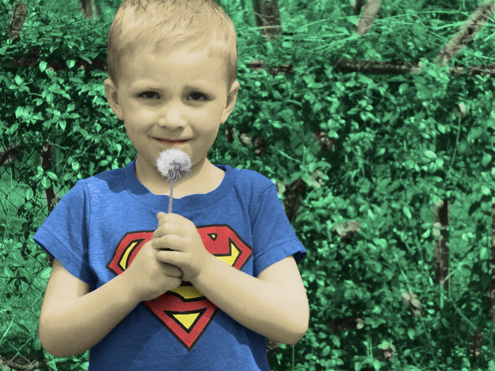 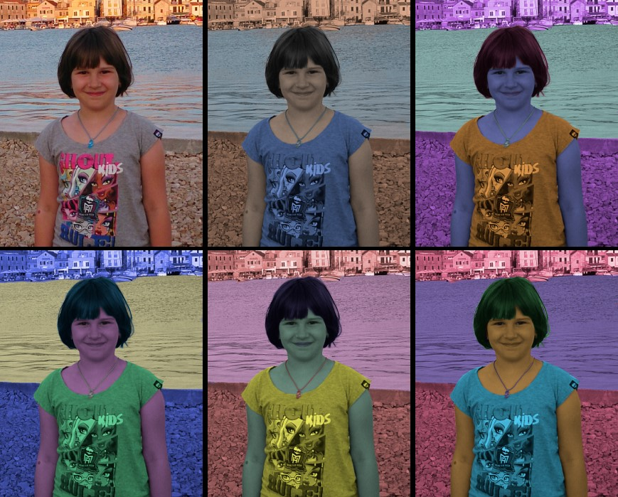7. vježba (GIMP): Fotomontaža
U ovoj vježbi naučila sam koristiti različite tehnike selektiranja jednostavnih i složenih objekata. U baznu fotografiju uklopila sam par elemenata iz drugih fotografija kao i vlastitih. Za jednostavne selekcije koristila sam Free select alat (za nebo), a za selekcije elemenata sa oštrim rubovima Scissors Select Tool i Quick Mask Mode (vozila, zebra, djevojka). Pomoću kanala i maski radila sam selekciju zamućenih i neravnih elemenata s puno detalja (drvo). Također sam naučila izrađivati sjene i ispraviti boje pomoću alata Color Balance, Levels i Brightness/Contrast.
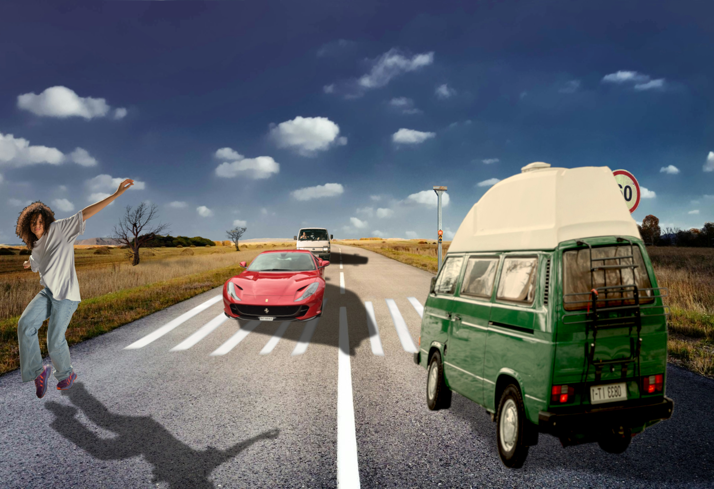2. projektni zadatak (GIMP)
Za drugi projektni zadatak trebala sam napraviti fotomontažu. Od ponuđenih fotografija, izabrala sam jednu za bazu, a iz ostatka ponuđenih fotografija i vlastitih fotografija uzimala sam neke elemente te ih različitim načinima ukomponirala u sliku baze. Na baznoj fotografiji napravila sam retuš oštećenja pomoću Clone i Healing alata, a ukomponirane dijelove sam precizno selektirala iz ostalih fotografija. Neki od alata koje sam koristila su: alati za transformacije (Free transform, Perspective), alati za selekcije (selekcija putem kanala), maske, izrada realistične sjene, korekcije boja, tehnike koloriranja (koloriranje elemenata u različitu boju od originla), transparencija slojeva i tekst.
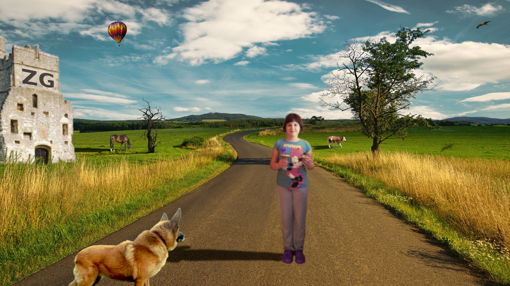8. vježba: Kinemagraf (Shotcut, GIMP)
Ovaj zadatak bio je izrada kinemagrafa koji spaja statičnu i pomičnu sliku. I prvi i drugi GIF radila sam na isti način - obradila sam statičnu sliku u GIMP-u, a video isječak u Shotcut-u, spojila ih i kao rezultat dobila statičnu grafiku sa malim animiranim dijelom.

 Ili se možete vratiti na početnu stranicu
Ili se možete vratiti na početnu stranicu